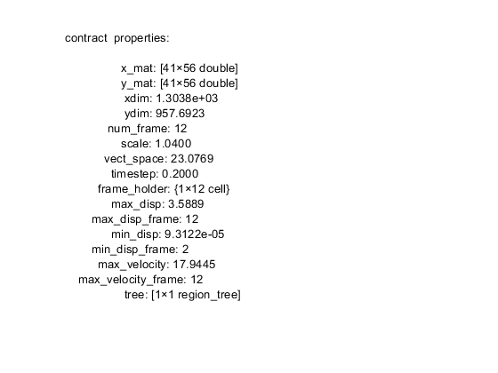

% AR_DIC_DEMO_PROCESS Demo to processes output of AR_DIC_Demo.m % % This demo organizes data structures, obtains mechanics measurements, and % builds a data tree from the results. Data can be explored manually by % viewing the vidobj "contract" in the variable viewer. Run the script % AR_DIC_Demo_plotting to demo plotting functions. % To setup simply set DIC_folder to the path of the DIC results. % % Adaptive Reference Digital Image Correlation v 1.0 2018 % Biomaterials and Mechanotransduction Lab University of Nebraska-Lincoln % % See also: % AR_DIC_DEMO % AR_DIC_DEMO_PLOTTING %Match path to operating system '\' on Windows and '/' on Unix-based systems %Set path here: DIC_folder='C:\Users\mme\Desktop\DIC_output'; %---------------------- User Options: Set parameters----------------------- % Set processing options here. stringtext specifies the file name % identifier to search for. For example, to process ImageJ output use % '*PIV3*.txt'. pxscale (scalar) specifies the pixel to physical length % scale (e.g. px/um). timestep (scalar) specifies the time between image frames. % threshold (scalar) specifies the threshold above which displacement is considered % relevant. strain_type (string) specifies the strain calculation method to % use. Either 'green_lagrangian' or 'cauchy' to use the Green-Lagrangian or % Cauchy strain calculation methods respectively. tree_opt (string) specifies % the regioning method to use to build a data tree. Use 'box' for faster % processing on uncomplicated shapes. Use 'convex_hull' for potentially more % accurate regioning but at the expense of longer computational time. stringtext='*PIV3*.txt'; %get only output files from 3rd iteration of plugin pxscale=1.04; %set pixel micrometer scale px/um (10x objective) timestep=0.2; %set time between frames (seconds) threshold=0.14; %define displacement threshold (0.14 from Fukuda et. al) strain_type='green_lagrangian'; % strain calculation to use. Options: 'green_lagrangian' or 'cauchy' tree_opt='box';%'box' for faster processing, 'convex_hull' for higher accuracy %-------------------------End of user Options------------------------------ %--------------------------- Data process---------------------------------- %Primary data processing occurs here: %initial data processing occurs in vidobj, (displacement, velocity, etc.): contract=vidobj(stringtext,DIC_folder, pxscale,timestep); %process contracting data={contract};%combine into cell for iteration for sets=1:length(data) %iterate for length of datasets mask_threshold(data{sets},threshold) %set masks based on threshold contraction_volume(data{sets})%calculate contraction volume [~]=measure_morphology(data{sets},tree_opt); %calculate morphology parameters construct_tree(data{sets},tree_opt); %build data tree of regions [~]=data{sets}.tree.leaf_index; %get indices of all leaves (find smallest independent regions) calc_strain(data{sets},strain_type);%calculate strains end %----------------------------Explore data---------------------------------- %user may wish to explore data here leaves_s100=get_node(contract.tree,contract.tree.leaf_index); %get nodes from leaf indices leaf_path=trace_path(leaves_s100{1},'time_sort'); %trace path from specified leaf to root [sorted_percent_area,percent_area_frame_index]=sort_morphology(contract,'percent_area'); [sorted_max,frame_index]=sort_morphology(contract,'Area'); %calculate principal strains: strains_principal_s2=transform_strain(contract,'principal'); strains_s2=strain_to_cell(contract); %Find maximum, minimum strain [max_val_s2,max_frame_s2,xind_s2,yind_s2]=get_max(strains_principal_s2,'principal_1'); secondary_max_strain_s2=strains_principal_s2{max_frame_s2}.s2(xind_s2,yind_s2); [min_val_s2,min_frame_s2,xind_min_s2,yind_min_s2]=get_min(strains_principal_s2,'principal_2'); secondary_min_strain_s2=strains_principal_s2{min_frame_s2}.s1(xind_min_s2,yind_min_s2); %display variable summary in figure: test=evalc('contract'); test(1:90)=[]; test=['contract ', test]; figure; ax_n=text(0,1,test); ylim([0,2]); set(ax_n,'Interpreter', 'none') axis off %EOF